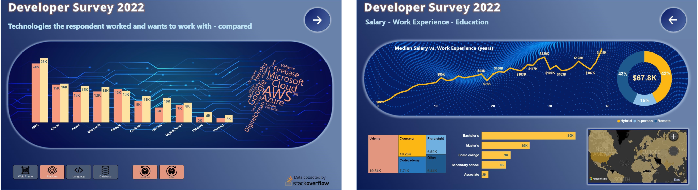
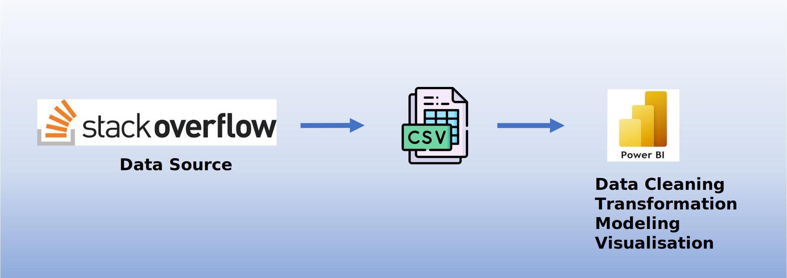

Developer Survey Analysis
Tracking data from surveys like Stack Overflow's developer survey is crucial for gaining insights into the evolving landscape of software development and the needs of developers worldwide. It provides valuable information about programming languages, tools, frameworks, and emerging trends, aiding companies and organizations in making informed decisions. By analyzing this data, we can identify skill gaps, understand job market demands, and tailor training programs or recruitment strategies accordingly. Tracking such data enables industry professionals, educators, and policymakers to stay updated with the ever-changing technology landscape, fostering innovation, and facilitating the growth of the developer community. Additionally, this data can help identify diversity and inclusion issues, promoting initiatives for a more inclusive and equitable tech industry.
Development Process
Data Cleaning, Analysis and Modeling: I obtained the data from StackOwerflow's Developer Survey 2022. The data is provided in .csv format which is about 80 columns and 73000+ rows.
I decided to load this into Power BI directly and perform all the cleaning, transfomation and preparation in Power Query. I kept only a few columns and I separated the data into different DIM tables. The final result is a star schema shown below.

Visualization
PowerBI report
... it may take a few seconds to load ...